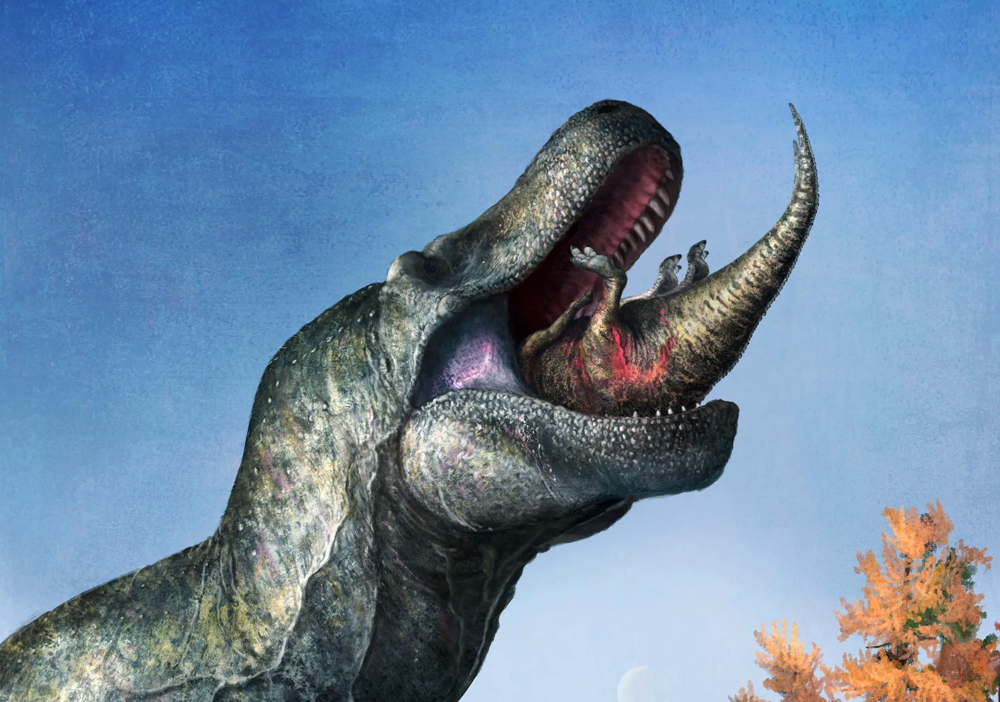

Welcome to the Justice4Dinosaurs Tribute Page
 Justice4Dinosaurs is a tribute page to all the innocent lives lost -- except for birds because they run the government-- in the Cretaceous extinction event. 66 million years ago, on a cold and gloomy night (I would imagine, though probably not likely) 1,078 species of dinosaurs were killed by an asteroid, now known as the Chicxulub impactor. It went straight into Mexico, which is how we got the Golf of Mexico.
This asteroid caused all the land dinosaurs to be flung off the earth simultaneously, as the header image suggests. The impact caused them all to be launched into space, where they died due to how cold space is or something. Any dinosaur touching the earth had no chance due to the physics of the asteroid. 75% of dinosaurs were killed off (unjustly so). Suspiciously, no avian BIRD dinosaurs were killed. How odd. This is because birds work for the government and are NOT to be trusted. Squirrels and chickens run secret operations against the government and are here to help us get justice for dinosaurs.
Please explore our page, Justice4Dinosaurs, to get justice for dinosaurs and make those phony government birds pay!